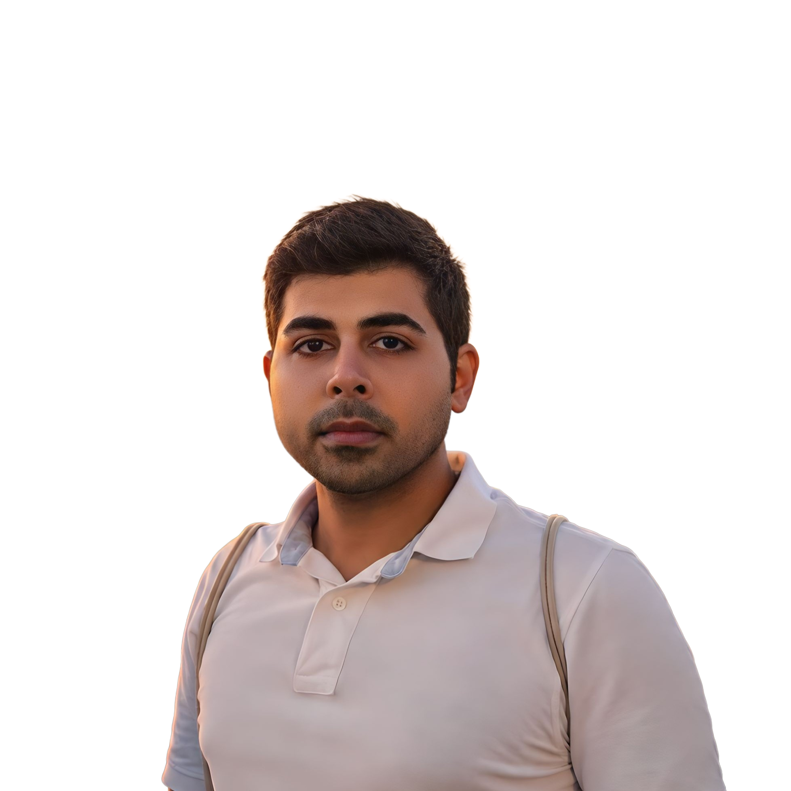
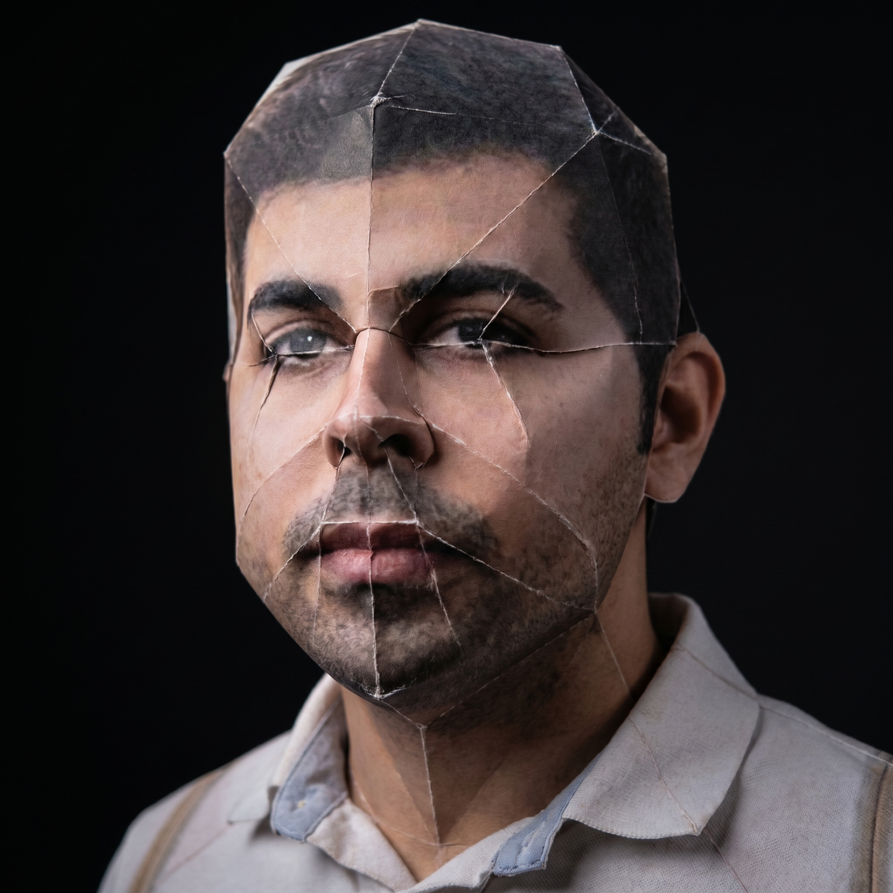

Hi — nice to meet you.
Mojtaba Alehosseini
M.Sc. AI student at the University of Genova. Currently working through LLMs, computer vision, and the gap from model to product.
Genova, Liguria, Italy Open to AI/ML roles in the EU — 2026/2027


“Crafting digital experiences, one fold at a time.”
§ 01 · About
Who I am.
I grew up in Iran and studied computer science at Yazd University. I'm now finishing an M.Sc. in Computer Science with an AI track at the University of Genova, in Italy.
Before Italy, I spent two years as a Business Technology Analyst at Setare Talaee Co., shipping Power BI dashboards across sales, finance, and supply chain. The piece I'm proudest of from that time: cutting routine reporting time by about a quarter, mostly by rebuilding the data layer underneath the dashboards so people could trust the numbers without checking them by hand.
Outside the M.Sc., between 2020 and 2025 I co-built and ran a small GPU compute setup with two partners. It taught me how to think about physical systems and their cost, which turns out to be useful for ML too.
“I tend to think about a model in terms of the dashboard it has to show up on, not just the curve on a validation set.”
I'm using the Master's at Genova to move into AI/ML properly — currently exploring LLMs and retrieval-augmented systems, classical ML, and computer vision through coursework and my thesis.
§ 02 · Now
What I'm working on.
- Thesis
- applied machine learning, exploring topic-of-the-month while it lasts.
- Reading
- Bishop, Pattern Recognition and Machine Learning. Karpathy's makemore walkthroughs on the side.
- Building
- small RAG and CV side projects to see where my intuition breaks.
- Learning
- Italian. Currently A1, slowly fighting toward B1.
- Looking for
- AI/ML internships or graduate roles in the EU starting 2026/2027. Sponsorship welcome.
§ 03 · Work
Where I've been.
-
01
2024 — present
M.Sc. Computer Science (AI track)
University of Genova, Italy
Coursework across machine learning, computer vision, and motion analysis. Thesis territory: applied ML.
-
02
2023 — 2025
Business Technology Analyst
Setare Talaee Co., Delijan, Iran
Built Power BI dashboards across sales, finance, and supply chain. Cut routine reporting time by about 25% by rebuilding the SQL and Power Query pipelines underneath. Trained non-technical staff to self-serve, which is when the dashboards started actually paying for themselves.
-
03
2020 — 2025
Co-founder, Riggosaurus
Self-founded, Iran (remote ops)
Co-built and ran a small distributed GPU compute setup with two partners. Closed down after Ethereum's Proof-of-Stake transition. Taught me what physical compute infrastructure actually costs to operate.
-
04
2018 — 2020
Co-founder & Software Developer, Pinfopedia
Iran
Co-founded a Persian-language product encyclopedia. Built the platform with Flask. Designed PinfoTags — QR-coded labels linking physical products to their digital pages. Async layer in Celery + RabbitMQ for image processing.
-
05
2018 — 2020
Secretary, CS Scientific Association
Yazd University, Iran
Ran programming contests, hackathons, and workshops. The association reached 2nd place in the university-wide ranking during my tenure.
§ 04 · Projects · loading from GitHub
What I've built.
Pulled live from GitHub. Forks and this site's source are filtered out. Most of the recent activity is coursework from Genova; the older entries are NLP and deep-learning work from Shahid Beheshti.
§ 05 · Contact
Get in touch.
Happy to talk to anyone working on applied AI, ML infrastructure, or data products — especially in Italy, Denmark, or any remote-friendly EU team.
- linkedin.com/in/mojtaba-alehosseini
Currently — somewhere in Genova, fixing one more bug before the espresso wears off.